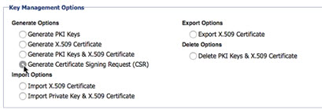
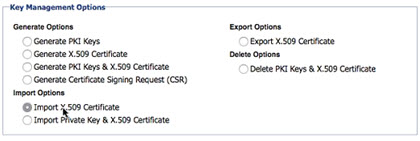

Certificate Authority
Learn how to view, configure and manage the Certificate Authority (CA), and how to update an expired certificate.
Security Configuration (Home) Policy Manager Domain Trusted CA Certificates
User Certificate Renewal Identity Systems Identity Profiles Privacy
Supported Platforms: 7.0 and greater.
Table of Contents
About Certificate Authority
A Certificate Authority (CA) is the Policy Manager CA Provider. The CA issues certificates and guarantees the validity of the binding between the certificate owner and its public key. The CA is a trusted authority, and any certificate issued by the CA identifies the owner of the certificate. Therefore, the private key that corresponds to the public key in the certificate is deemed to be known only by the specific owner.
Only one Certificate Authority can be configured. A Certificate Authority can be regenerated, renewed, deleted, or exported. When the Certificate Authority is generated, a serial number and Issuer DN is assigned. The Issuer DN will be the same as the Subject DN.
Two Certificate Authority options are supported: Policy Manager provides a simplified version of Certificate Authority that can issue and renew X.509 certificates, or one can be imported.
Note: The Policy Manager Certificate Authority is intended to be used in test environments for verifying features related to Policy Manager. For production environments, importing a formal CA is recommended (for example, VeriSign) that aligns with security policy requirements.
back to top
View Certificate Authority Summary
- Go to Configure > Security > Certificates > Certificate Authority. The Certificate Authority Summary screen displays and shows details of the Certificate Authority configuration and a list of certificate management options.
Note: If a Certificate Authority has not yet been defined, you'll see a notification message. Click Configure Certificate Authority to begin the configuration process.
- Review CA details:
- Public Key - The name of the public key associated with the CA certificate.
- Subject DN - The Subject Distinguished Name (DN) assigned to the CA certificate including but not limited to certificate name, organization, organization unit, and geographical identifiers such as country, state, and province.
- Issuer DN - An Issuer Distinguished Name (DN) assigned to the CA certificate. Includes key identifier information including geographical identifiers such as country, state, province, organization, and organizational unit.
- Serial Number - Serial number assigned to the CA certificate.
- Effective Date - The date the CA certificate was issued.
- Expiration Date - The date the CA certificate expires.
- Status - The number of days before the CA certificate expires.
back to top
Configure Certificate Authority
Note: After the Certificate Authority is defined, you can generate PKI Keys and Certificates using the Manage PKI Keys Wizard for Users, Containers, Service Identities, and Users.
The following Generate options are available after configuring the Certificate Authority:
| Manage PKI Keys Generate Options |
Available In |
| Generate PKI Keys |
User, Services, Organization Identities, Containers |
| Generate X.509 Certificate |
User, Services |
| Generate PKI Keys and X.509 Certificate |
User, Services, Organization Identities, Containers |
| Generate Certificate Signing Request (CSR) |
User, Services |
Generate X.509 CA Certificate and PKI Keys
The Generate CA Certificate and X.509 Certificate screen allows you to generate PKI Keys and an X.509 certificate. PKI Keys guarantee message integrity by signing the message with a private key and verifying the message with a public key. An X.509 certificate is an authentication mechanism that provides visibility to public information and verifies private information while keeping it secure. Credential Information is embedded in the body of a SOAP Message, or can be obtained from the HTTPS Context.
- Go to Configure > Security > Certificates > Certificate Authority. The Certificate Authority Summary screen displays. If a Certificate Authority has not yet been defined, you'll see a notification message.
- Click Configure Certificate Authority.
The Configure Certificate Authority Wizard launches and displays the Select Certificate Configuration Option screen.
- Click the Generate X.509 CA Certificate and PKI Keys radio button, and Next to continue.
The Generate CA Certificate and PKI Keys screen displays.
- Click a radio button to assign the key length to the CA. Choose from:
- 1024 bits
- 2048 bits
- 4096 bits
- Under Subject Distinguished Name (DN) enter the following values:
- Common Name (CN) - The owner name of the Certificate Authority (e.g., Policy Manager Certificate Authority).
- Organizational Unit (OU) - The group or department name of the owner of the Certificate Authority.
- Organizational Name (O) - The name of the organization that owns the Certificate Authority.
- Locality Name (L) - (Optional) The geographic region of the Organization that owns the Certificate Authority.
- State Name (S) - The state of the organization that owns the Certificate Authority.
- Country (C) - The country of the organization that owns the Certificate Authority.
Note: A DN identifies the owner of a particular public key/private key pair. Key identifier information includes but is not limited to certificate name, organization and organization unit, and geographical identifiers such as country, state, and province.
- Under Validity Period, specify:
- Expiration Date - Click to launch a calendar pop-up that allows you select the expiration date for the Certificate Authority.
- Expiration Time - Using 24-hour clock time (e.g., 13:00), specify the Hour and Minute the Certificate Authority will expire on the date selected in the step above.
Note: The Validity Period is used to specify the date and time of a CA's expiration and is applied at the time the CA configuration is saved.
- Click Finish. The Certificate Authority Summary screen displays showing configuration details.
Import X.509 CA Certificate and Private Key
Import keys and a certificate that have been issued by a third-party Certificate Authority. The import function supports .CER and .DER file formats.
- Go to Configure > Security > Certificates > Certificate Authority. The Certificate Authority Summary screen displays. If a Certificate Authority has not yet been defined, you'll see a notification message.
- Click Configure Certificate Authority.
The Configure Certificate Authority Wizard launches and displays the Select Certificate Configuration Option screen.
- Click the Import X.509 CA Certificate and Private Key radio button, and Next to continue.
The Keystore Details screen displays.
- Specify the following details:
- Keystore Type - Select the Java or PKCS12 radio button.
- Keystore Path - Use Browse to specify the file location of the X.509 Certificate. Once selected, the field is populated with the directory path of the certificate file.
- Keystore Password - Enter the keystore password for the certificate.
- Confirm Keystore Password
- Key Alias - Click Load Aliases. The Key Alias drop-down is populated with a list of Key Alias entries that are defined in the specified keystore file. Select the Key Alias you would like to import from the drop-down.
- Key Password - Enter the key password and confirm.
- Click Finish.
The Certificate Authority Summary screen displays showing details of the Certificate Authority configuration just created.
back to top
Manage CDP Options
About Managing CDP Options
The Manage CDP Options function allows you to modify the Policy Manager Certificate Authority (CA) configuration to include the CRL Distribution Point (CDP), and specify a CRL Distribution Point URL.
Here's how it works:
- The Policy Manager Certificate Authority (CA) also issues a Certificate Revocation List (CRL). This CRL is stored at the CRL Distribution Point (CDP), which is the location where the latest Certificate Revocation List (CRL) can be downloaded.
- The CDP location can be accessed via a CRL Distribution Point URL which is a public URL where the certificate revocation list can be retrieved.
- This URL is generated by the Policy Manager CRL Distribution Point Service, located in Policy Manger under Workbench > Services.
- The Certificate Distribution Point Options section includes a Modify CDP Options function that allows you to enable the inclusion of a CRL Distribution Point (CDP) and specify a CRL Distribution Point URL.
Notes:
- This option is disabled by default. In disabled mode, the certificates generated by the Policy Manager CRL Distribution Point Service will not have the CRL Distribution Point (CDP). This means that the link to the Certificate Revocation List (CRL) will not be accessible
- The CRL Distribution Point URL can be any name but must route to the Policy Manager CRL Distribution Point Service.
- If the Policy Manager Certificate Authority (CA) is deleted using the Delete CA Certificate function, the CDP Options are also deleted. If you use the Renew CA Certificate function, CDP Options that are configured will be retained.
Scenarios
Policy Manager and certificates in same subnet:
When the Policy Manager installation and certificates generated by Policy Manager are in the same subnet, use the Modify CDP Options function with no additional steps.
Policy Manager and certificates in different subnet:
Access to a Policy Manager installation is restricted for a specific subnet. However, certificates generated by Policy Manager may be distributed to customers outside of that subnet. In this case:
- The certificates may include a URL to the Certificate Revocation List. This URL is called a CDP.
- The Policy Manager CRL Distribution Point Service must point to this URL. However, because you are trying to access a CRL Distribution Point Service that might be in a different subnet, you cannot use it directly.
To resolve this access problem, you can set up a proxy server that publishes a URL that users can reach. This URL is then routed to the Policy Manager CRL Distribution Point Service URL by specifying the URL on the Manage CDP Options page.
To Manage CDP Options
Enable the Policy Manager Certificate Authority with Certification Revocation List functionality.
- Go to Configure > Security > Certificates > Certificate Authority. The Certificate Authority Summary screen displays. If the certificate authority is not yet generated, see Configure Certificate Authority.
- In the Certificate Distribution Point Options section, click Manage CDP Options.
The Manage CDP Options screen displays.
- Click the Include CRL Distribution Point checkbox.
- In the CRL Distribution Point URL field, specify a URL for the CRL.
- Click Apply.
Your configuration changes appear in the Certificate Distribution Point Options section of the Certificate Authority Summary screen.
back to top
Regenerate CA Certificate
This function regenerates a Policy Manager CA Provider which is a simplified version of Certificate Authority that can issue and renew X.509 certificates.
Two regeneration options are available:
- Delete the CA certificate from the Policy Manager data repository.
- Move the CA certificate to the Trusted CA Certificates section.
To regenerate a CA certificate
- Go to Configure > Security > Certificates > Certificate Authority. The Certificate Authority Summary screen displays.
- Click Regenerate CA Certificate. The Regenerate CA Certificate screen displays.
- Under Subject Distinguished Name (DN), enter:
- Common Name (CN) - The owner name of the Certificate Authority (e.g., Policy Manager Certificate Authority).
- Organizational Unit (OU) - The group or department name of the owner of the Certificate Authority.
- Organizational Name (O) - The name of the organization that owns the Certificate Authority.
- Locality Name (L) - (Optional) The geographic region of the Organization that owns the Certificate Authority.
- State Name (S) - The state of the organization that owns the Certificate Authority.
- Country (C) - The country of the organization that owns the Certificate Authority.
Note: A DN identifies the owner of a particular public key/private key pair. Key identifier information includes but is not limited to certificate name, organization and organization unit, and geographical identifiers such as country, state, and province.
-
Under Validity Period, specify:
- Expiration Date - Click to launch a calendar pop-up that allows you select the expiration date for the Certificate Authority.
- Expiration Time - Using 24-hour clock time (e.g. 13:00), specify the Hour and Minute the Certificate Authority will expire on the date selected in the step above.
Note: The Validity Period is used to specify the date and time of a CA's expiration and is applied at the time the CA configuration is saved.
- Under Options, choose between:
- Move the active CA Certificate to the Trusted CA Certificate section - Moves the active CA certificate to the Trusted CA Certificates section before regenerating the new CA certificate. All certificates issued with this CA certificate are retained and remain valid. New certificates will be issued with the new trusted authority.
- Delete the current CA Certificate - Deletes the active CA certificate. All certificates issued with this CA certificate are invalidated and must be reissued with new trusted authority
-
Click Apply.
- If you selected the Move the active CA Certificate to the Trusted CA Certificate section option, you'll see a notification message. Click OK to move the CA certificate to the Configure > Security > Trusted CA Certificates section of the Management Console, and regenerate the CA certificate.
The Certificate Authority Details screen displays, showing a summary of the new CA certificate configuration.
All certificates issued with the previous Certificate Authority will remain valid until they expire.
- If you selected the Delete the current CA Certificate option, you'll see a confirmation message. If you're sure, click OK to delete the CA certificate and regenerate the CA certificate.
The previous CA certificate is removed from the Policy Manager data repository.
All certificates issued with the previous CA certificate will become invalid and should be reissued based on your requirements.
The Certificate Authority Details screen displays, showing a summary of the new CA certificate configuration.
All new certificates will be issued with the newly created Certificate Authority.
back to top
Renew CA Certificate
Change the expiration date and time for both generated and imported certificates.
Note: When a CA certificate is renewed, the private key is retained and the existing certificate is replaced with a new self-generated one.
- Go to Configure > Security > Certificates > Certificate Authority. The Certificate Authority Summary screen displays.
Note: To renew a CA certificate, an existing CA certificate must already be defined.
- Click Renew CA Certificate.
The Renew CA Certificate screen displays, including the currently defined expiration date and time and status. If the period until expiration is less than 24 hours, you'll see the following status: Expires in 0 days.
-
Configure the new expiration date and time based on your requirements:
- Expiration Date - Click on this blank field to launch a calendar pop-up that allows you select the expiration date for the Certificate Authority.
- Expiration Time - Using 24-hour clock time (e.g. 13:00), specify the Hour and Minute the Certificate Authority will expire on the date selected in the step above.
- Click Apply.
The Certificate Authority Summary screen displays showing your newly entered expiration date and time.
back to top
Import CA Certificate
Replace the existing CA certificate with an externally imported one, while retaining the current private keys; or upload a new external CA certificate.
- Go to Configure > Security > Certificates > Certificate Authority. The Certificate Authority Summary screen displays.
Note: To renew a CA certificate, an existing CA certificate must already be defined.
- Click Import CA Certificate.
The Import CA Certificate screen displays.
- Enter the path to the CA certificate file manually or by clicking Browse and navigating to the directory.
- Click Apply.
The CA certificate will be imported and the certificate details will be displayed on the Certificate Authority Summary screen.
Note: If the specified CA certificate is not from a trusted source, an error message will be raised.
back to top
Generate CA CSR
Generate a Certificate Signing Request (CSR) for the Policy Manager certificate authority.
About Certificate Signing Requests
A Certificate Signing Request (CSR) is a file that includes encoded information generated by a web server identifying the applicant and the public key chosen by the applicant. Before creating a CSR, the applicant first generates a key pair, keeping the private key secret. The corresponding private key is not included in the CSR, but is used to digitally sign the entire request.
A CSR file typically has a .CSR extension, but can have other extensions, based on the source application that generated the file. Policy Manager supports the PEM (which is a BASE64 encoded PKCS10) for Certificate Signing Requests.
A CSR is sent from an applicant to a Certificate Authority to request a digital certificate, such as an X.509 certificate, which can then be imported later to make the Policy Manager CA as a subordinate CA to the third-party Certificate Authority.
To Generate a CA CSR
- Go to Configure > Security > Certificates > Certificate Authority. The Certificate Authority Summary screen displays.
Note: To renew a CA certificate, an existing CA certificate must already be defined.
- Click Generate CA CSR. The Generate CA Certificate Signing Request screen displays, showing a Certificate Signing Request Details section that includes the list of Subject Distinguished Name (DN) elements that comprise the CSR.
- Enter the CSR details based on your requirements:
- Common Name (CN) - The owner name of the Certificate Authority (e.g., Policy Manager Certificate Authority).
- Organizational Unit (OU) - The group or department name of the owner of the Certificate Authority.
- Organizational Name (O) - The name of the organization that owns the Certificate Authority.
- Locality Name (L) - (Optional) The geographic region of the Organization that owns the Certificate Authority.
- State Name (S) - The state of the organization that owns the Certificate Authority.
- Country (C) - The country of the organization that owns the Certificate Authority.
- Click Finish. The Certificate Signing Request is generated and you are returned to the Certificate Authority Summary screen.
back to top
Export CA Certificate
Save the CA certificate to a file to be used by other software applications.
- Go to Configure > Security > Certificates > Certificate Authority. The Certificate Authority Summary screen displays.
- Click Export CA Certificate.
- Save the certificate file based on your browser requirements.
back to top
Delete CA Certificate
Deleting a certificate invalidates all certificates that might be in use that reference this certificate. To issue new certificates, you'll need to configure a new CA certificate that will be used as the trusted authority. Be sure you want to delete; it is not reversible.
- Go to Configure > Security > Certificates > Certificate Authority. The Certificate Authority Summary screen displays.
- Click Delete CA Certificate.
- At the warning message, click OK to confirm deletion.
back to top
Issue Certificate
The Certificate Authority is an entity that issues digital certificates for use by other parties. The Issue Certificate Wizard provides an interface that allows you to generate and download a certificate from a Certificate Signing Request (CSR).
- Go to Configure > Security > Certificates > Certificate Authority.
The Certificate Authority Summary screen displays.
- Click Issue Certificate. The Issue Certificate Wizard launches displaying the Select Certificate Signing Request screen. See About Certificate Signing Requests in Generate CA CSR for details.
- Click Browse to navigate to the directory location of the Certificate Signing Request file.
- Select the desired Certificate Signing Request file.
The field display populates with the selected path.
- Click Next. The Export Certificate screen displays, showing the Public Key and Subject DN information of the certificate to be issued. The function of this screen is to:
- Generate and then download a certificate using the contents of the Certificate Signing Request (CSR) file specified in steps 3 & 4 above.
- Set a Validity Period (expiration date) for the certificate. Click the Expiration Date field to launch a calendar pop-up; choose the expiration date, and then, in the Expiration Time fields, add the Hour and Minute values (in 24-hour clock time) to define the end of the validity period.
- Click Finish.
- Save the certificate file based on your browser requirements.
back to top
Updating an expired certificate
If the certificate for a container is expired, or close to expiration, the best way to update it is to get a new certificate. It's not necessary to update the private key in this scenario.
There are just a few steps in this process. The procedure below summarized these steps, with links for more detailed instructions.
To update an expired certificate for a container
- Generate a Certificate Signing Request (CSR) for the container. This results in an exported certificate.csr file.
In the Akana Administration Console for the container: Configuration tab > Configuration Actions > Manage PKI Keys. Under Key Management Options, choose Generate Certificate Signing Request (CSR), as shown below. For Policy Manager: see Generate CA CSR. See Generate Certificate Signing Request (CSR). Note that you do not need to update the private key unless it's been compromised. A new certificate can reference the same key pair.

When you complete the wizard, the certificate.csr file is saved to your default folder for downloads.
- Send the certificate.csr file to your Certificate Authority, or your security team. Once the signing process is complete, you'll receive a new certificate.
- Upload the new certificate for the container.
In the Akana Administration Console for the container: Configuration tab > Configuration Actions > Manage PKI Keys. Under Key Management Options, choose Generate Certificate Signing Request (CSR), as shown below. Choose Import X.509 certificate, browser for the certificate, and import it.

- Refresh the metadata for your container. This is necessary for the new certificate to take effect.
In Policy Manager, on the right, choose Workbench. On the left select the container. On the right, under Actions, choose Update Container Metadata. For more information, see Update Container Metadata.
Once you've completed the steps above, test to make sure that your container can communicate with the Network Director.
back to top